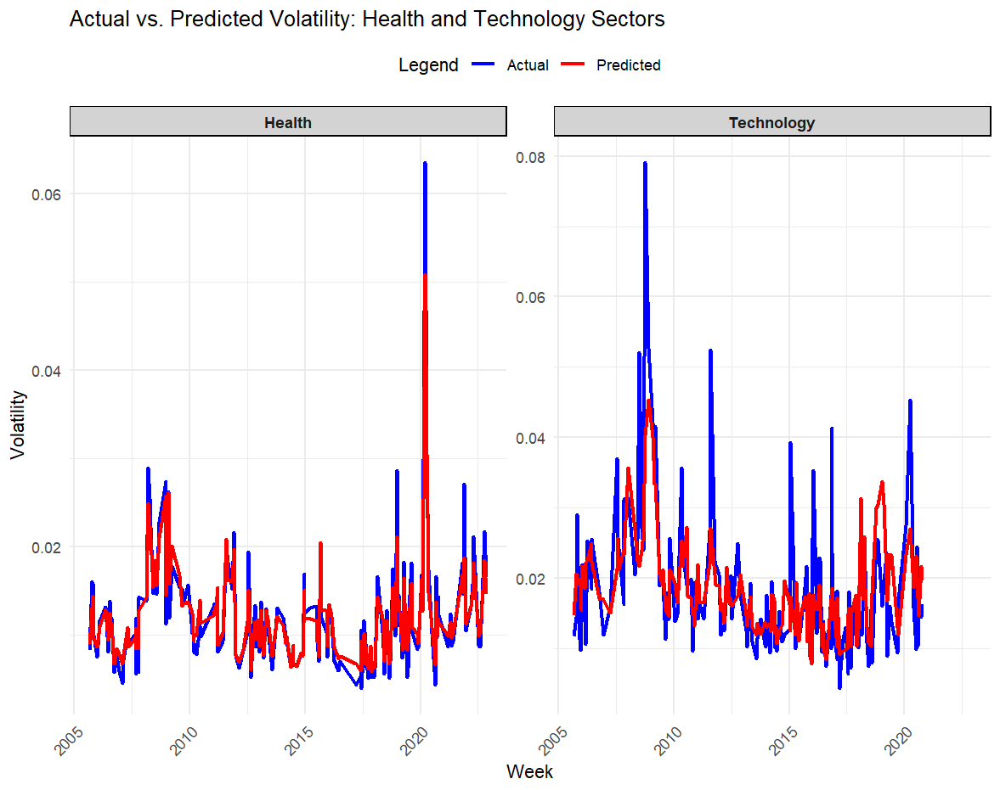

Introduction
Stock price volatility serves as a critical indicator of market risk, reflecting economic conditions, market sentiment, and liquidity dynamics. This research examines the drivers of volatility in the Health and Technology sectors, focusing on sector-specific influences such as regulatory decisions and innovation cycles. Using advanced feature engineering and predictive modeling, it evaluates key patterns and the performance of models like Random Forest and XGBoost. The findings aim to enhance understanding of sector-specific risks, offering insights for investors and policymakers.
Research Questions
- What are the key patterns and relationships between weekly trading volume, price movements, and stock price volatility in the health and technology sectors?
- How do features such as lagged values, moving averages, and momentum indicators influence stock price volatility in these sectors?
- How do predictive models perform in forecasting stock price volatility, and what are the sector-specific differences in their predictive accuracy?
Key Findings
- Higher trading volumes were strongly correlated with price volatility, particularly in the technology sector.
- Features such as VWAP, Bollinger Bands, and RSI emerged as key predictors of volatility.
- XGBoost consistently outperformed Random Forest, achieving higher R² values and lower RMSE in both sectors.
- Technology stocks demonstrated higher predictive accuracy due to greater feature variability, while health stocks required stability-focused features.
- Lagged weekly returns played a pivotal role in forecasting stock price volatility. 
R Code
Access the R scripts here.
Instructions for Downloading and Running the Code
Repository Link
Access the project repository on GitHub: INF6027-IDS
Step 1: Clone the Repository
-
Clone or Download the Repository:
- Go to the repository link: INF6027-IDS
- Click the green Code button.
- Choose Download ZIP to download the repository as a ZIP file or use Git to clone it:
git clone https://github.com/tahaops6/INF6027-IDS.git- Extract the ZIP file to your desired directory if downloaded.
-
The repository contains:
INF6027_Assignment.R(R script)Health.zip(Health sector dataset)Technology.zip(Technology sector dataset)
Step 2: Extract Data Files
- Navigate to the downloaded/extracted repository folder.
- Extract the contents of
Health.zipandTechnology.zipinto their respective folders: - Ensure the
Healthfolder contains CSV files related to the Health sector. - Ensure the
Technologyfolder contains CSV files related to the Technology sector.
Step 3: Install Prerequisites
- Install R and RStudio:
-
Install Required Packages:
- Open RStudio and run the following command to install necessary libraries:
install.packages(c("dplyr", "ggplot2", "randomForest", "caret", "xgboost", "reshape2", "iml", "zoo", "plotly", "GGally", "lubridate"))
Step 4: Run the Code
-
Set the Working Directory:
- In RStudio, open the script
INF6027_Assignment.R. - Update the following line to match the directory where you downloaded the repository:
setwd("C:/path/to/INF6027-IDS") - In RStudio, open the script
-
Run the Script:
- Run the entire script by clicking Source in RStudio.
- Alternatively, execute specific sections step-by-step by selecting lines of code and pressing Ctrl + Enter.